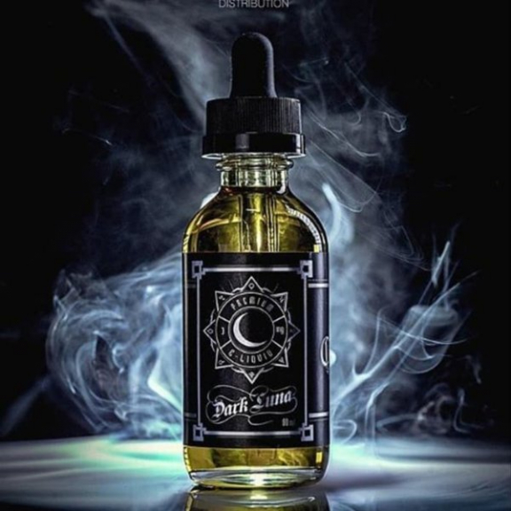

Apa itu liquid?
Liquid
Liquid vape adalah cairan yang digunakan dalam perangkat vaping untuk menghasilkan uap yang dihirup. Liquid vape juga dikenal dengan nama lain, seperti e-liquid, e-juice, vape juice, atau vapor juice. Liquid vape memiliki berbagai pilihan rasa, aroma, dan level nikotin. Liquid vape umumnya terdiri dari tiga bahan dasar, yaitu air, propylene glycol (PG), dan vegetable glycerin (VG). Selain itu, perasa buatan juga biasanya ditambahkan untuk memberikan rasa buah atau kue.
Liquid vape mengandung berbagai zat kimia yang berisiko mengganggu kesehatan. Nikotin cair dalam liquid vape bisa beracun, sehingga tidak boleh diminum atau dibiarkan siapa pun meminumnya. Liquid vape impor atau premium biasanya menggunakan bahan-bahan berkualitas tinggi, seperti VG dan PG organik atau flavoring alami, yang membuat harganya lebih mahal.
Kembali ke Halaman Utama